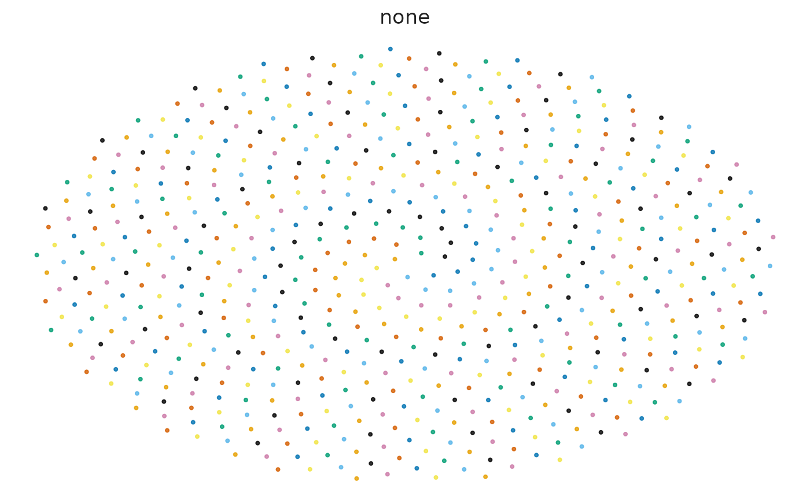
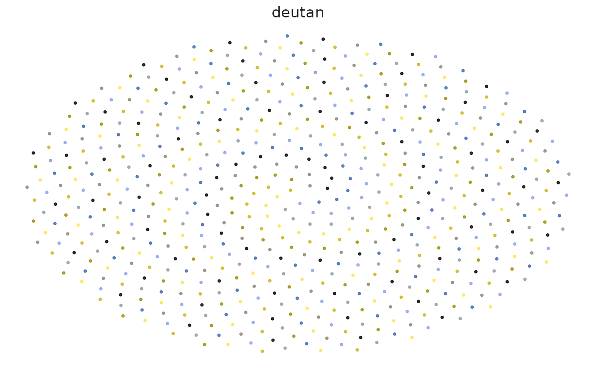
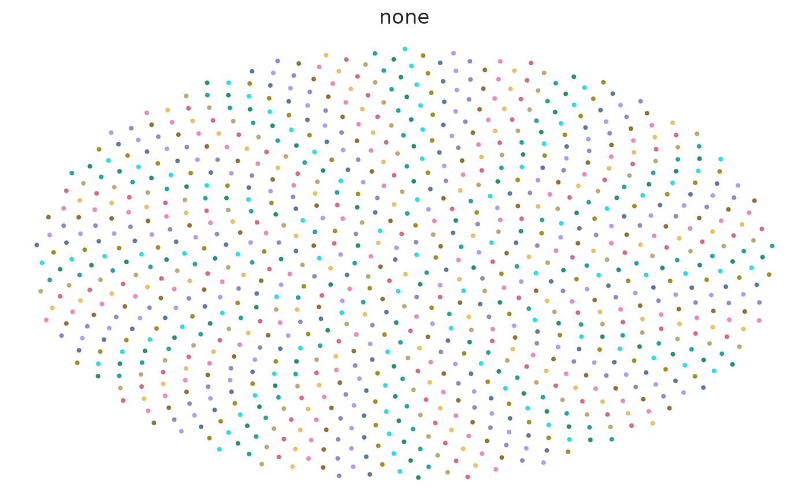
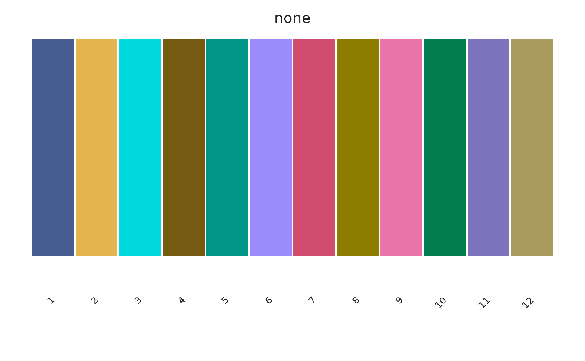

Normal and simulated CVD views
audit <- sc_palette_audit(
"okabe_ito",
cvd = c("none", "deutan", "protan", "tritan")
)
audit## <sc_palette_audit> okabe_ito
## n_colors invalid_color_count duplicate_count min_distance median_distance
## 8 0 0 21.72367 49.49019
## worst_pair min_contrast median_contrast lightness_monotonic
## #E69F00 / #F0E442 1.322328 3.241087 NA
## diverging_center_distinct
## NA
views <- sc_palette_plot(
"okabe_ito",
view = "points",
cvd = c("none", "deutan", "protan", "tritan")
)
views$none
views$deutan
The audit reports minimum and median CIE2000 distances in every requested vision simulation plus contrast against the chosen background.
Light and dark backgrounds
sc_palette_audit("tol_muted", background = "#FFFFFF", cvd = "none")## <sc_palette_audit> tol_muted
## n_colors invalid_color_count duplicate_count min_distance median_distance
## 9 0 0 15.00318 47.67533
## worst_pair min_contrast median_contrast lightness_monotonic
## #882255 / #AA4499 1.618128 3.662107 NA
## diverging_center_distinct
## NA
sc_palette_audit("tol_muted", background = "#1A1A1A", cvd = "none")## <sc_palette_audit> tol_muted
## n_colors invalid_color_count duplicate_count min_distance median_distance
## 9 0 0 15.00318 47.67533
## worst_pair min_contrast median_contrast lightness_monotonic
## #882255 / #AA4499 1.429713 4.752545 NA
## diverging_center_distinct
## NA
sc_palette_recommend(
8, use = "cell_identity", geometry = "point", background = "dark"
)## palette_id
## 6 chromatic
## 2 tol_muted
## 5 ditto40
## 1 okabe_ito
## reason
## 6 qualitative; registered for this use; recommended; sufficient fixed capacity
## 2 qualitative; registered for this use; recommended; sufficient fixed capacity
## 5 qualitative; registered for this use; recommended; sufficient fixed capacity
## 1 qualitative; registered for this use; recommended; sufficient fixed capacity
## capacity status min_cie2000 score
## 6 40 recommended 12.38083 83.38083
## 2 9 recommended 11.82594 82.82594
## 5 40 recommended 11.13303 82.13303
## 1 8 recommended 11.13303 82.13303Point versus fill geometry
Small dense points are harder to distinguish than broad filled regions. Registry recommendations therefore include geometry and background metadata; contrast values are diagnostics rather than automatic WCAG pass/fail claims for plot marks.
sc_palette_plot("chromatic", n = 12, view = "points", cvd = "none")
sc_palette_plot("chromatic", n = 12, view = "swatch", cvd = "none")
High-cardinality limitations
No 30- or 40-color sequence is universally color-blind safe. At high cardinality, combine color with direct labels, facets, shapes, line types, spatial separation, or interactive lookup. Use hierarchy maps when subtype similarity should be explicit.
sc_hierarchy_map(
parent = c("Lymphoid", "Lymphoid", "Lymphoid", "Myeloid", "Myeloid"),
child = c("B", "T", "NK", "Mono", "DC")
)## <sc_color_map[5]> type: hierarchy; palette: hierarchy:tol_muted; background: light; schema: v1
## B: #833744
## NK: #C76A79
## T: #FF9FB1
## DC: #453F7B
## Mono: #675EB4